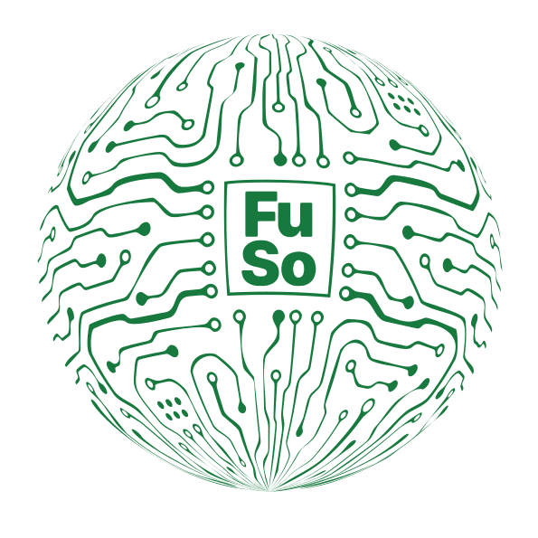
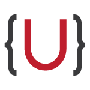

Universität St.Gallen
where tech and society fuse
Ein interdisziplinärer Hub, der entlang des Full Stack arbeitet:
Analysieren › Entwickeln › Einsetzen › Evaluieren

Die Gesellschaft sollte den technologischen Wandel nicht passiv hinnehmen, sondern aktiv mitgestalten. Der Future Society Hub will das ermöglichen. Wir sind ein Raum für gemeinsame Problemlösung, in dem Forschende, Organisationen und Bürger:innen Technologie an menschlichen Werten ausrichten. Unsere Haltung ist proaktiv: Wir antizipieren technologiebedingte gesellschaftliche Veränderungen und gestalten Technologie aus gesellschaftlicher Perspektive mit.
Über uns
FuSo ist Hub und Anlaufstelle zugleich. Wir nehmen die Chancen und Risiken neuer Technologien von Anfang bis Ende in den Blick, gestützt auf die aktuelle Forschung.
An der Universität St.Gallen bündeln wir die Expertise der School of Computer Science und der Law School und entwickeln daraus evidenzbasierte Full-Stack-Lösungen für Wissenschaft, Verwaltung, NGOs und Industrie.
Wo andere Hubs nach der Forschung aufhören, geht FuSo den ganzen Weg mit: vom ersten Gedanken über die gemeinsame Entwicklung und das Abwägen von Risiken bis zur Umsetzung und Evaluation in der Praxis.
Projekte
Veranstaltungen
Kommende Veranstaltungen
12Okt2026
International Workshop on Reality Mediation
Im Rahmen der UbiComp/ISWC 2026
27Okt2026
Closing the Loop: Sustainability in Fashion and Textiles
4Nov2026
Legal Design Workshop
7–8Nov2026
Legal Hackathon
8Dez2026
FuSo Xmas Lunch & Speed Dating
26–28Jan2027
Strategic AI Governance Course
Weiterbildung
29–30Apr2027
Solid Symposium 2027
Gesponsert von 
1Okt2026
AI+X Summit
29Sep2026
FuSo Retreat
28Sep2026
Joint Research Meeting on Computing for Reality Mediation
mit Forschenden der Nagoya University (Internet of Realities )
6–7Jul2026
Everyday Law Workshop
9Jun2026
KEK Workshop „Meinungsmarkt oder Meinungsmacht?!"
FuSo Vorträge
13Okt2026
Brown Bag Talk
Wi-Fi Sensing and Privacy: Uses and Misuses of CSI and Beamforming Feedback
Vortragende:r: Bruno Rodrigues
27Okt2026
Brown Bag Talk
Kids-fluencer
Vortragende:r: Isabelle Wildhaber
In Kooperation mit dem Institute for Law and Economics
6Nov2026
Featured CoCoDa Talk
Open Terms Archive
Vortragende:r: Matti Schneider , Gründer von Open Terms Archive und OpenFisca
10Nov2026
24Nov2026
Brown Bag Talk
Drivers of AI regulation
Vortragende:r: Bruno Caprettini
In Kooperation mit dem Institute for Law and Economics
19Jan2027
15Sep2026
17Sep2026
On Action Plans, Action Research, and Inaction – States of Play in Researcher Data Access
Vortragende:r: LK Seiling
24Sep2026
29Sep2026
Featured CoCoDa Talk
Who gets to encode the law? AI and Legal Processes for Data Access
Vortragende:r: Jake Stein
Kontaktieren Sie uns für weitere Informationen: fuso@unisg.ch.
Schwerpunkte
01
Wir beraten Behörden zur Governance künstlicher Intelligenz und bringen regulatorische Expertise zu neuen Technologien ein.
02
Wir entwickeln techno-rechtliche Werkzeuge, mit denen sich systemische Risiken neuer Technologien und Online-Plattformen weltweit erkennen und eindämmen lassen.
03
Wir antizipieren künftig benötigte Kompetenzen, gestalten Bildungswege mit, fördern neue Fähigkeiten und schaffen ein sicheres digitales Umfeld für Menschen.
04
Wir wirken am Entwurf, an der Entwicklung und an der Regulierung künftiger digitaler Infrastrukturen mit, zum Nutzen der Gesellschaft.
05
Wir loten aus, wie sich juristische Prozesse automatisieren lassen, um den Zugang zum Recht zu verbessern.
06
Wir stärken eine widerstandsfähige, gesunde und inklusive Gesellschaft mit Ubiquitous Computing im grossen Massstab.
Mitmachen
FuSo lebt von Zusammenarbeit und Engagement — mit Studierenden, Forschenden, politischen Entscheidungsträger:innen und Menschen aus der Praxis. Wählen Sie die Perspektive, die zu Ihnen passt, und die Liste zeigt die Wege, die für Sie gedacht sind. Manche davon richten sich an mehrere Zielgruppen und erscheinen deshalb mehrfach.
Melden Sie sich, um mehr über die Möglichkeiten zur Teilnahme zu erfahren: fuso@unisg.ch
Team
Gefördert Von
Unsere Arbeit wird durch die folgenden Förderagenturen und Programme ermöglicht.
Kontakt
Wir arbeiten mit Forschenden, politischen Entscheidungsträger:innen, Verwaltungen, NGOs und Industriepartnern zusammen. Wenn Sie an einer Zusammenarbeit interessiert sind, schreiben Sie uns gerne.
Über unser Kernteam hinaus teilen wir unsere Arbeit über Newsletter, Policy Briefs, Podcasts und soziale Medien, um ein breiteres Publikum zu erreichen. Viele unserer neueren Papers erscheinen zudem als Songs auf SoundCloud.
Universität St.Gallen
Institute of Computer Science und Institute of Law and Economics
Rosenbergstrasse 30
St. Gallen, Schweiz